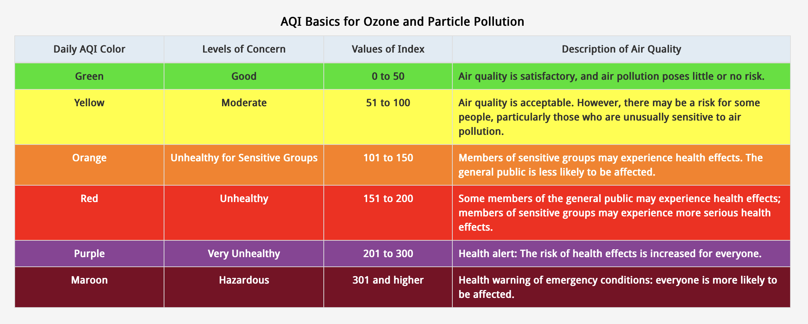

Current Projects
By Madeline Everett
Cycling in the Twin Cities research
I like biking, but I often feel as though Minneapolis is not as bike friendly as it is proclaimed to be. I visited Copenhagen earlier this year and was able to bike all around the city and always ride on a bike lane or bike pathway separated from cars. The city seemed to be built around cyclists and pedestrians, with cars as an afterthought. In the Twin Cities, it is not so easy to go around the city via bike, and oftentimes bikes must share lanes with buses and cars that are turning. The bike lanes are usually not separated from the cars. My goal in this project is to map what areas of the Twin Cities a cyclist can access via bike path or bike lane. I also want to map bike accidents and examine what areas have more accidents.
I found data for bicycle accidents with cars in 2022 at MnCrash and made a chart showing which time most bike accidents occcur.
More bike accidents happen during evening rush hour in Twin Cities area
Peak of accidents was between 3 and 6 pm in 2022
Most bicycle accidents in Twin Cities result in injury or death
Only 11% of accidents are injury-free and listed as a "Property Damage Only Crash"
This graph shows how the bike crashes are categorized. Only 11% are listed here as a 'Property Damage Only Crash'. This means that someone was injured or was suspected to have been injured in 89% of the crashes. This makes sense because this data is on crashes between bicycles and cars, which are very dangerous for cyclists.
According to this report from the Minnesota Department of Public Safety, only crashes between a bicycle and a car are reported. I am planning on looking to see if I can find data on bicycle/bicycle crashes, bicycle/pedestrian crashes, or other types of bicycle crashes. Those kinds of crashes are probably less dangerous and may not be as important to this study. I am also working on the mapping part of the project in QGIS. While I was researching, I found on the Minneapolis city website that Black residents are disproportionately impacted by car accidents. For example, Black residents are 19% of the Minneapolis population, but 26% of people killed in crashes. Neighborhoods that have people with lower incomes and more People of Color are called Transportation Equity Priority areas. Between 2017 and 2021, 43% of severe and fatal crashes in Minneapolis happened in these areas. I would like to see if there is a similar problem with bike accidents. I want to map the Transportation Equity Priority areas and the bicycle crashes and see if there is any overlap. I also want to map bicyle paths and lanes to see if there are enough of these resources inthe Transportation Equity Priority areas.
Air Quality in Minnesota research
This summer, I lived in New York City and studied at the journalism school at Columbia University. At the beginning of the summer, NYC had some days with really bad air quality - the air quality index (AQI) levels were well over 300, in the range of hazardous. After a week, the bad air passed, and we mostly had good days. When I called my family in Minnesota, they usually said that the air quality was moderate or unhealthy,mostly due to the wildfires. It seemed as though New York had a few days with really, really bad air quality, and then good air quality the rest of the time. In Minnesota, it seemed as though most of the time the air quality was not horrible, but also not good. This observation inspired me to research what the air quality was like in Minnesota this year.
I made the graphs below by downloading air quality data for the Twin Cities area from the EPA's air quality website. The AQI data is for both the pollutants ozone and PM2.5. I downloaded the data from the website in csv form, loaded it into a Jupyter Notebook using Python/Pandas, and then cleaned and analyzed the data. I sorted the air quality values each day into categories for severity. The categories that the EPA uses are listed at airnow.gov.
Many moderate air quality days in Minneapolis area this year
29 unhealthy days so far this year for sensitive groups or everyone
This chart shows the hazard level of the AQI reading for each day of 2023 so far. 162, or nearly half of the days of this year have had moderate or unhealthy air quality. Moderate air quality is not dangerous for most people, but there can be a risk for those who are especially sensitive to air pollution. The air quality could have been negatively affecting those who are sensitive nearly half of the year. 29 of those days were either unhealthy for sensitive groups or unhealthy for all. A month out of the year so far has been unhealthy for some or all of the population.
Air quality was not so great this summer in Twin Cities
17 days this summer had unhealthy air quality for sensitive or all groups
The summer was the worst time for air quality. With only 24 days of good air quality, there were more moderate days than good. 17 days of the summer had air quality that was unhealthy for sensitive or all groups.
For further research on this project, I am planning on looking into the air quality data for the rest of the state. I also want to dig more into past years and see how air quality has changed over time in Minnesota.
I would also like to look into how the air quality this year has affected the health of residents of the Twin Cities. With so many smoky days, and surely more to come, I believe that this is an important issue.